In our previous investigation, the improved Device Sync action sent two WNS notifications. One woke WindowsMDMPush so the Windows MDM client could trigger the Policy refresh. The other targeted the IME Notification App and carried a DirectSync request for Win32 apps, PowerShell scripts, and Proactive Remediations.
When I pressed Sync again with v2 of this sync button implementation, something had changed. WindowsMDMPush was still activated through WNS, but the IME request now appeared in NotificationInfraLogs as an incoming IC3 Trouter request. The payload was almost identical to the one we captured before. The workloads had not changed. The transport used to reach IME had.

It started as a Windows MDM-only Device Sync
The original Windows Remote Sync action was built around the Windows MDM stack. When an administrator pressed Sync in the Intune portal, Intune asked Windows Push Notification Services to send a small notification to the device. That notification did not contain policies. It only told Windows that the device should contact Intune again.
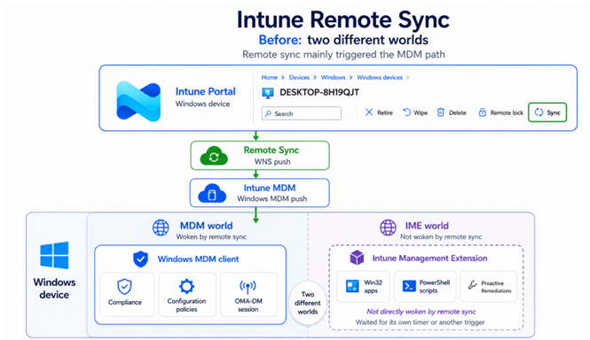

Windows then activated the WindowsMDMPush task. The device enrollment components started the OMA DM client, opened a management session, and asked Intune for policy and compliance work. The Intune Management Extension was not part of that chain.
That is why the button often felt incomplete. Win32 apps, PowerShell scripts, and Proactive Remediations are not processed by the Windows MDM client. They belong to IME and followed their own schedules. A configuration policy could arrive after pressing Sync, while a newly assigned required app still appeared to do nothing.
The important point for this story is simple: the first version only woke the Windows MDM side of the device.
The first improvement added IME workloads to Device Sync
Microsoft fixed the biggest limitation by adding a second notification beside WindowsMDMPush. The Windows MDM notification stayed in place, but a separate notification now targeted the IME Notification App and carried a Sidecar notification payload.
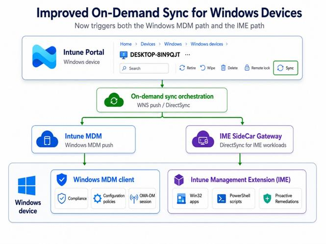

That payload selected the workloads. NotificationIntent was set to 2, which maps to Win32AppWorkload. SyncType was set to DirectSync. AdditionalWorkloads contained 8 and 9, which map to PowerShellScriptWorkload and ProactiveRemediation.
Inside IME, the request used the existing device action pipeline. DeviceActionCallbackAsync handled the incoming action and then called the workload specific handlers. TriggerWin32AppAsync started the Win32 app check, TriggerPowerShellScriptAsync started the script check, and TriggerProactiveRemediationAsync started the remediation sync.
This was the first real improvement. One click could now wake both management clients. The Windows MDM client refreshed policies and compliance, while IME immediately checked its workloads. At that point the workloads had changed, but both notification paths still used WNS.
WNS Replaced with IC3 in the IME for Device Sync
The newer capture shows the next step. The Windows MDM side still records the raw notification that activates WindowsMDMPush. That part has not moved. The IME side is different. Instead of another WNS activation for the IME Notification App, NotificationInfraLogs records Processing incoming Trouter request.
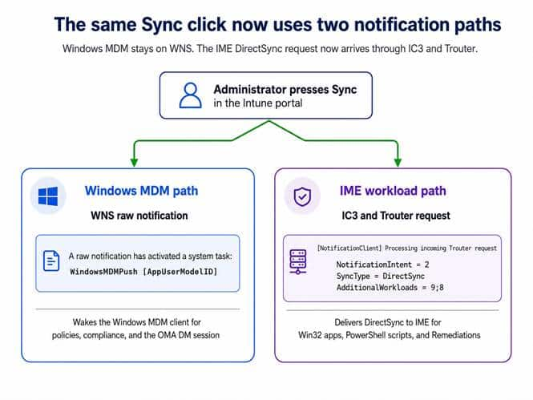

The message contains the same values as before. NotificationIntent is still 2. SyncType is still DirectSync. AdditionalWorkloads is now written as 9;8 instead of 8;9, but it still selects Proactive Remediations and PowerShell scripts. The order is different. The selected workloads are not.
The important detail is that clicking Sync does not create a direct browser connection to the device. The portal submits an action to the Intune service. The client side files do not expose the complete internal service routing, so that middle hop should not be presented as if it were visible in the binaries. The evidence becomes direct again when Trouter delivers the request to IME.

That existing connection is the real time part of the design. Before anyone presses Sync, IME receives the notification infrastructure configuration through its normal check in. The response supplies the registrar endpoint, the Trouter endpoint, the token endpoint, and the configuration lifetime. IME stores those values under SOFTWARE\Microsoft\IntuneManagementExtension\IC3, obtains a token, registers its listener, and starts the Trouter client.

The investigated code now lets us show that connection at code level rather than only through symbol names. IC3Client.StartAsync builds TrouterClientOptions from the downloaded configuration, creates the token provider, creates the Trouter client, registers MessageListener on /notification, attaches the connection events, and calls TrouterClient.Start().
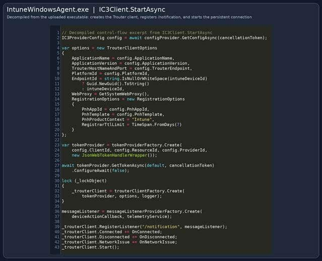

Figure 6. Decompiled IC3Client.StartAsync from the uploaded IntuneWindowsAgent executable. The method creates the Trouter client, registers the /notification listener, and starts the persistent connection.
What happens inside IME after you press Device Sync
Once the connection is already active, the later Device Sync action can use it. The service side action targets the IME notification infrastructure and Trouter pushes the request over the existing WebSocket. The client side path starts in MessageListener.ProcessRequestAsync.
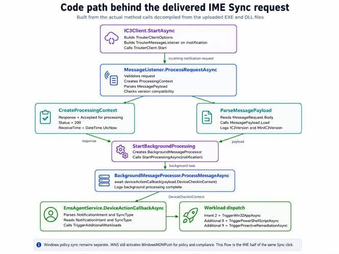

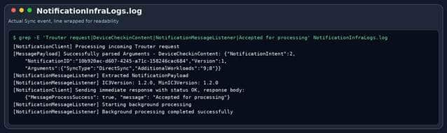

Figure 8. NotificationInfraLogs from the Device Sync action shows the Trouter request, DirectSync payload, acknowledgement, and background processing.
ProcessRequestAsync
ProcessRequestAsync validates the request, creates the processing context, parses MessagePayload, checks the IC3 version, starts background processing, and returns the response. CreateProcessingContext is also where the immediate Accepted for processing response and HTTP status 200 are prepared.
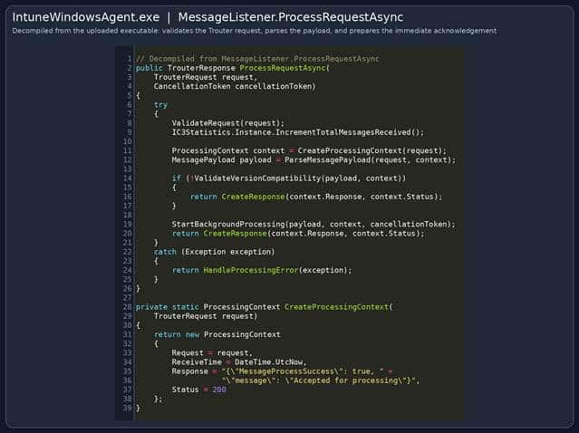

Figure 9. Decompiled MessageListener.ProcessRequestAsync and CreateProcessingContext. This is the code path that prepares the immediate acknowledgement.
ParseMessagePayload
ParseMessagePayload reads TrouterRequest.Body and passes it to the message processor. The resulting MessagePayload contains DeviceCheckinContent together with IC3Version and MinIC3Version. StartBackgroundProcessing then creates BackgroundMessageProcessor and starts it with the same cancellation token.
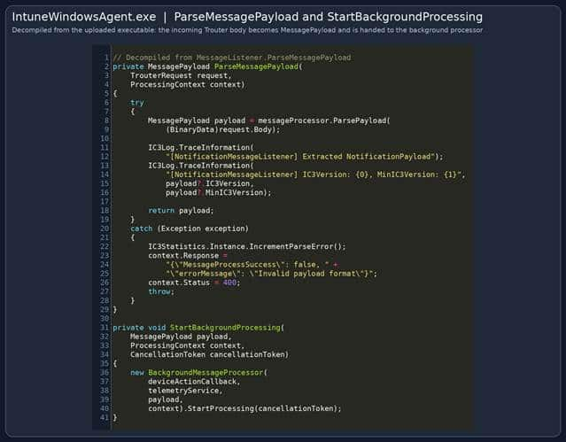

Figure 10. Decompiled ParseMessagePayload and StartBackgroundProcessing. The Trouter request body becomes MessagePayload and is handed to the background processor.
BackgroundMessageProcessor.
The next handoff is especially important. BackgroundMessageProcessor.ProcessMessageAsync calls deviceActionCallback with payload.DeviceCheckinContent. In other words, IC3 is not introducing a second app or script engine. It feeds the new transport into the existing device action callback.
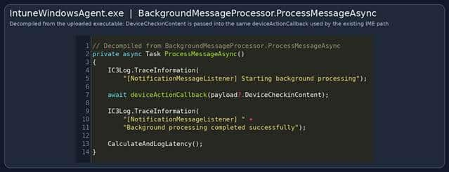

Figure 11. Decompiled BackgroundMessageProcessor.ProcessMessageAsync. DeviceCheckinContent is passed directly to the existing deviceActionCallback.
SidecarNotificationPayload
The callback parses the same SidecarNotificationPayload used by the earlier WNS implementation. It reads NotificationIntent, SyncType, and AdditionalWorkloads. The primary intent can trigger its own handler, while TriggerAdditionalWorkloads handles the extra values from the semicolon separated list.

Figure 12. Decompiled EmsAgentService.DeviceActionCallbackAsync. The IC3 payload enters the existing workload dispatcher and reaches the Win32, PowerShell, and remediation callbacks.
SidecarNotification
The SidecarNotification DLL confirms the numeric values rather than leaving them as assumptions. Win32AppWorkload is 2, PowerShellScriptWorkload is 8, and ProactiveRemediation is 9. The same DLL also contains GetSyncType and GetAdditionalWorkloads, which read the exact keys used in the DirectSync payload.

Figure 13. Decompiled SidecarNotificationActionType and payload extension methods from the uploaded SidecarNotification DLL.
TriggerAdditionalWorkloads
AgentCommon contains the code that handles the 9;8 value. TriggerAdditionalWorkloads splits the string on semicolons, caps it at twenty entries, validates every value against SidecarNotificationActionType, skips the primary intent and duplicate values, creates a new ClientContext, and dispatches the matching workload callback. The code only supports the three workload values that matter here: 2, 8, and 9.
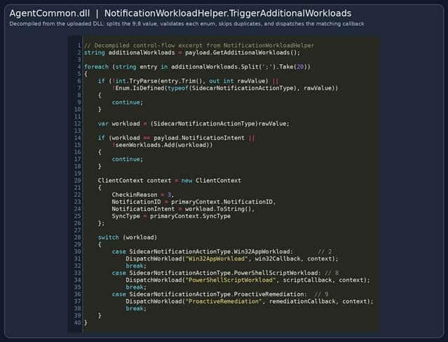

The complete code path can now be followed without relying on a list of strings. IC3Client.StartAsync creates the live Trouter connection. MessageListener.ProcessRequestAsync accepts the incoming request. BackgroundMessageProcessor passes DeviceCheckinContent into deviceActionCallback. EmsAgentService.DeviceActionCallbackAsync then routes the primary and additional workload values into the existing IME handlers.
Turning the investigation into a live IC3 Sync monitor
Once the two notification paths were clear, I wanted to see them together instead of constantly switching between the Windows event logs and NotificationInfraLogs. That is why I built the Intune Notification Monitor. The goal was not to simulate Intune, but to correlate the real client side evidence produced by the next Sync action and turn it into one readable flow.
The monitor also made the speed improvement immediately visible. Because IME already has an active IC3 and Trouter connection before anyone presses Sync, the DirectSync request does not have to wait for the next scheduled IME check in. In our captured actions, the IC3 request arrived and started the IME workload flow within milliseconds of pressing Sync in the Intune portal.

That timing is an observation from our captures and should not be treated as a guaranteed response time. However, it clearly shows the advantage of delivering the request over an already established connection.
The current Intune Sync design is hybrid
Putting everything together, pressing Sync now starts two related but separate client paths. The Intune Notification Monitor can display them as one Hybrid action, but the evidence underneath remains distinct. The Windows MDM branch begins with WNS and WindowsMDMPush. The IME branch begins when IC3 and Trouter deliver the DirectSync request to NotificationMessageListener.
On the Windows MDM side, the built in client handles policies, compliance, and the OMA DM session. On the IME side, the already established Trouter connection carries DeviceCheckinContent into the existing DeviceActionCallbackAsync pipeline, which then dispatches Win32 apps, PowerShell scripts, and Proactive Remediations.
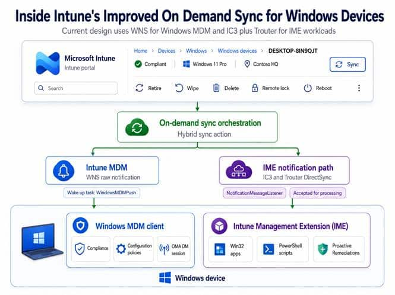

The most accurate description is therefore not that Intune Sync has completely moved to IC3. The current implementation is hybrid. WNS remains the wake up path for Windows MDM. IC3 and Trouter are now the delivery path for the IME DirectSync request. The monitor does not change that architecture; it simply makes both halves visible in one place.
One click in the portal now coordinates two clients through two different notification paths. The Sync button looks almost unchanged. Underneath it, the architecture has changed completely, and the live monitor gives us a practical way to watch that change happen on the device.
Receiving and acknowledging the request is only the first part. The next question is how Intune follows both paths and turns their progress into the new Sync Status window. That is the next part of the story.
What about the new Sync status window?
The new Sync status pane is the visible part of this improved flow. After the device is notified, Intune follows the different Sync areas separately and shows whether policies, applications, and scripts completed successfully.
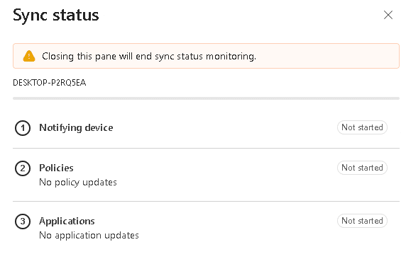

How those individual results are collected, correlated, and returned to the portal deserves its own technical investigation and a dedicated follow up blog.